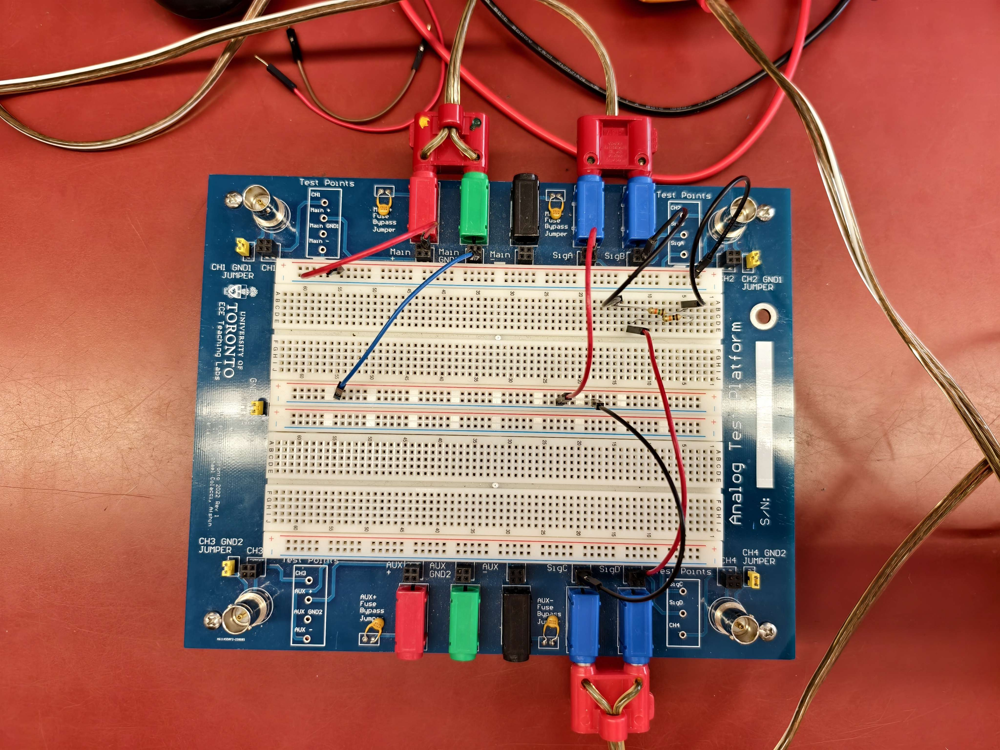
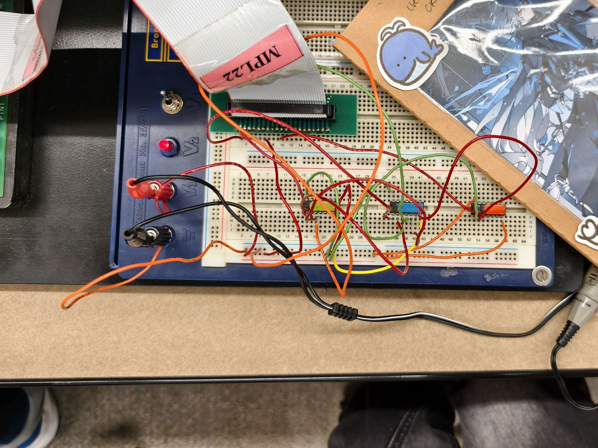
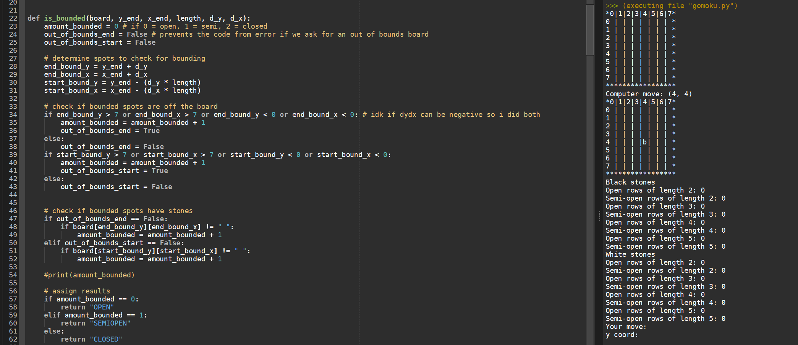
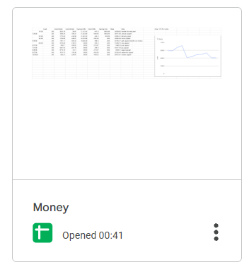

What have I done in Hardware and Software?
Contrary to the Physical Labs, ECE Labs are weekly, small labs that helped me build related skills throughout the course. These were usually in the electrical and computer engineering field, not only because the labs are smaller, but also because ECE skills demand a more integrated learning environment between hands-on activity and lecture content.
A lot of these skills have demonstrated to be very useful even outside of the field, especially programming for interpreting data in the other labs. Since the world is so integrated with digital tools, I expect most of these skills to be transferable no matter where I go!
Building Circuits and Creating Waveforms
In ECE159, I learned about the fundamentals of electric circuits. In lecture, there was a lot of content about AC/DC sources, capacitors, inductors, op-amps, and a lot of other terms that I only sort of understood on paper. But these hands-on labs were what really helped me understand the content.


For example, I didn't fully understand how an op-amp could increase volume by adjusting voltage gain. The calculations to prove this all made sense, but it was just something I needed to hear with my own ears to truly appreciate it.
I also had the opportunity to visualize waveforms created by the circuits using the digital oscilloscopes in the lab. I think the biggest takeaway I got from these labs, apart from learning the content better, was that sometimes one good picture is really worth a thousand words. Or maybe, I might just greatly prefer visual learning.

Dabbling with Hardware: System Verilog and Assembly
Similar to ECE159, the labs in ECE253, Digital and Computer Systems, helped solidify my knowledge from lecture content. As a course that I am currently still taking, I have yet to finish all the labs and reflect on my learning, so this section will just include some snippets of cool labs I've done!

In this lab, I was able to create a variable counter on the FGPA. There are 4 modes: One that counts once every 50 MHz (too fast to see), 1 second, 2 seconds, and 4 seconds. Before the program was set to the FGPA, prior testing was done using ModelSim to create waveforms and check that the counter changed at the correct pace.
Programming with Coding Languages
In ESC180, I improved my Python writing skills, and in ESC190, I learned to code in C. The programming languages are cool and intriguing, but I think the best thing I got out of these courses was better understanding how data is stored in code, which helped me apply programming to many other fields!

I also learned how to debug using steps and breakpoints, which helped me track where the code stopped working the way as intended. Additionally, creating my own test cases proved to be a good strategy as well.

It has also made me interested to start coding projects of my own, such as this living portfolio (which is written with HTML/CSS). I'm also really looking forward to learning about new languages in courses (RISC-V Assembly, R) since I can find patterns between them and other languages I already know.

Living in a Digital World
Since the world we live in right now is heavily embeded in technology, it's been a great service for me to have some ECE knowledge even if it's not the field I'm super interested in.
And I don't necessarily believe the value comes from just the technical skills of knowing some hardware and software. I think the idea of breaking down a big module into many smaller modules to deal with in hardware is very similar to solving problems in the real world. The design process of using schematics and pseudocode is also applicable to other fields, as well! And who knows, maybe my more tech-savvy friends will convince me to do some game-dev projects with them in the future...